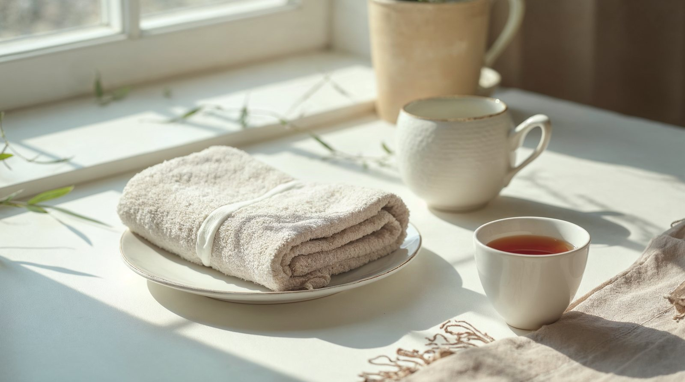
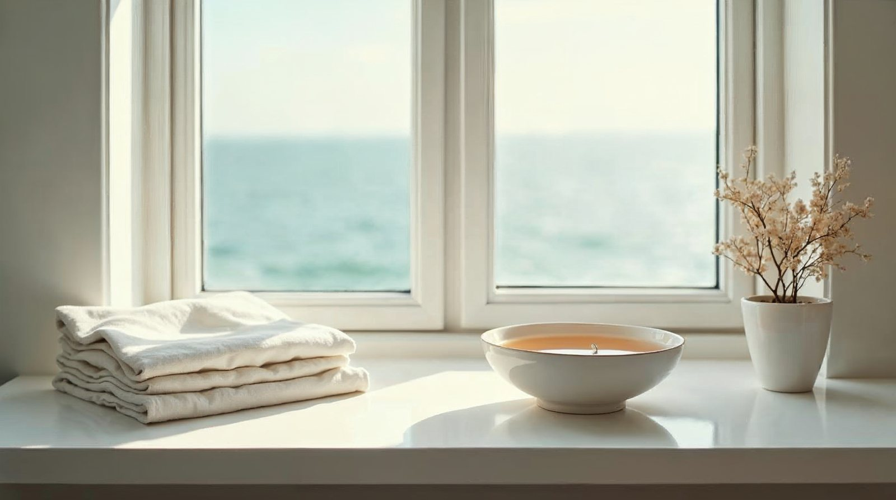
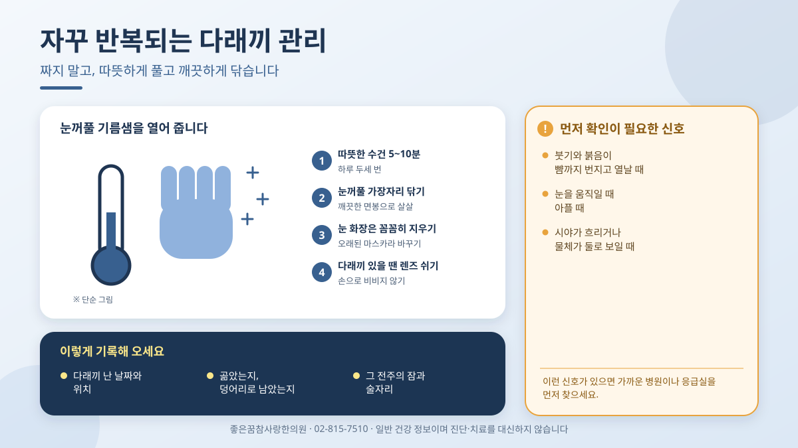

이종호 한의사 감수좋은꿈참사랑한의원 대표원장 (한의사 면허번호 19769)발행 2026-11-26 · 수정 2026-11-26
이 글의 차례
거울을 보는데 한쪽 눈꺼풀 가장자리가 빨갛게 부어 있습니다. 눈을 깜빡일 때마다 욱신거리고, 화장으로 가리기도 어렵습니다. 지난달에 겨우 가라앉았는데 이번에는 반대쪽입니다. "저는 왜 이렇게 다래끼가 자주 날까요?" 진료실에서 꽤 자주 듣는 질문입니다.
다래끼는 눈꺼풀에 있는 작은 기름샘이나 속눈썹 뿌리 쪽에 염증이 생기는 것입니다. 한 번쯤은 누구나 겪을 수 있지만, 몇 달 사이에 여러 번 반복된다면 눈꺼풀 주변 환경과 몸의 흐름을 함께 살펴볼 필요가 있습니다.
다래끼가 반복되는 분들은 눈 자체보다 생활에서 겹치는 이유가 있는 경우가 많습니다. 잠이 부족한 시기, 눈 화장을 오래 하는 날, 렌즈를 끼고 비비는 습관, 기름진 음식이 잦은 시기처럼요. 그래서 진료실에서는 다래끼 하나하나보다 그것이 반복되는 흐름을 먼저 봅니다.
다래끼는 얼굴 한가운데 생기다 보니 마음이 많이 쓰입니다. 사람을 만나는 일정이 있으면 더 신경 쓰이고, 짜내고 싶은 마음도 듭니다. 이 글에서는 반복을 줄이는 생활과 함께, 생겼을 때 덧나지 않게 하는 방법도 정리했습니다.
다래끼에는 어떤 종류가 있나요
흔히 다래끼라고 부르는 것은 크게 두 가지로 나눌 수 있습니다. 모양과 느낌이 조금 달라서 구분해 두시면 관리에 도움이 됩니다.
- 겉다래끼: 속눈썹 뿌리 쪽 눈꺼풀 가장자리가 빨갛게 붓고 아프며, 노란 고름점이 보이기도 함
- 속다래끼: 눈꺼풀 안쪽 기름샘에 염증이 생겨 눈꺼풀 전체가 붓고 누르면 아픔
- 콩다래끼(산립종): 아프지 않은데 눈꺼풀 안에 콩알처럼 단단한 덩어리가 만져짐
겉다래끼와 속다래끼는 세균 감염과 함께 생기는 경우가 많아 붓고 아픕니다. 콩다래끼는 기름샘 입구가 막혀 기름이 굳어 생긴 것으로, 염증이 가라앉은 뒤에도 덩어리가 오래 남는 경우가 많습니다.
왜 다래끼가 자꾸 반복될까요
가장 흔한 이유는 눈꺼풀 기름샘이 잘 막히는 것입니다. 눈꺼풀에는 눈물이 마르지 않도록 기름을 내보내는 작은 샘이 줄지어 있는데, 이 기름이 끈적해지거나 입구가 막히면 고이고 염증이 생기기 쉽습니다. 이런 상태를 마이봄샘 기능 장애라고 부르기도 합니다.
눈꺼풀 가장자리의 염증도 흔한 이유입니다. 속눈썹 뿌리 쪽에 비듬 같은 각질이 붙고 눈꺼풀 가장자리가 늘 붉다면 눈꺼풀염이 있을 수 있습니다. 이런 분은 다래끼가 반복되기 쉽습니다.
손과 눈 화장도 살펴봅니다. 눈을 자주 비비거나, 렌즈를 깨끗하지 않은 손으로 만지거나, 눈 화장을 제대로 지우지 않고 자는 습관은 눈꺼풀에 세균과 기름 찌꺼기를 남깁니다. 오래된 마스카라나 아이라이너도 원인이 될 수 있습니다.
잠과 피로는 진료실에서 꼭 여쭙는 부분입니다. 잠이 부족하고 피로가 쌓인 시기에 다래끼가 잘 난다는 분이 많습니다. 몸이 지치면 작은 염증도 쉽게 가라앉지 않습니다.
마지막으로 피부 상태와 식습관입니다. 얼굴 지루성 피부염이나 주사, 여드름이 있는 분은 눈꺼풀 기름샘도 잘 막히는 경향이 있습니다. 기름지고 단 음식, 술이 잦은 시기에 다래끼가 늘었다는 분도 계십니다.
다래끼는 짜도 될까요
빨갛게 부어오르고 노란 점이 보이면 짜내고 싶은 마음이 듭니다. 하지만 손으로 짜면 염증이 주변으로 퍼지거나 덧날 수 있어서 권하지 않습니다. 바늘로 터뜨리는 것도 마찬가지입니다.
대부분의 겉다래끼는 온찜질을 하면서 기다리면 며칠 사이에 저절로 터지거나 가라앉습니다. 붓기와 통증이 심하거나 크기가 커진다면 안과에서 진찰을 받고 필요하면 처치를 받는 것이 안전합니다.
콩다래끼처럼 덩어리가 몇 주에서 몇 달 남아 있다면 안과에서 상의해 보세요. 크기와 위치에 따라 지켜보기도 하고, 작은 처치로 꺼내기도 합니다.

다래끼가 생겼을 때 온찜질은 어떻게 하나요
온찜질은 굳은 기름을 녹여 기름샘 입구가 열리도록 돕습니다. 다래끼가 생겼을 때도, 반복을 줄이기 위한 평소 관리로도 많이 권합니다.
- 깨끗한 수건을 따뜻한 물에 적셔 꼭 짜기
- 눈을 감고 눈꺼풀 위에 5~10분 올려 두기
- 식으면 다시 데워 따뜻한 온도 유지하기
- 하루 두세 번 반복하기
- 너무 뜨겁지 않게, 손등에 대 보고 편한 온도로
- 찜질 뒤 눈꺼풀 가장자리를 깨끗한 면봉으로 살살 닦기
전자레인지로 데우는 눈 찜질팩을 쓰실 때는 속까지 너무 뜨거워지지 않았는지 꼭 확인하세요. 눈꺼풀 피부는 얇아서 생각보다 쉽게 데일 수 있습니다. 찜질하는 동안에는 눈을 세게 누르지 말고 가볍게 올려 두기만 하세요.

다래끼와 비슷해 보이는 것들
눈꺼풀이 붓는다고 모두 다래끼는 아닙니다. 알레르기로 눈꺼풀 전체가 부어오르는 경우는 가렵고 양쪽이 함께 붓는 경우가 많습니다. 눈이 충혈되고 눈곱이 많이 낀다면 결막염일 수 있습니다.
눈꺼풀이 붓고 붉은 범위가 넓게 퍼지며 열이 나는 경우는 다래끼보다 눈 주위 연조직의 염증일 수 있습니다. 같은 자리에 덩어리가 계속 커지거나 오래 낫지 않으면서 속눈썹이 빠진다면 안과에서 한 번 자세히 확인해 보시는 것이 좋습니다.
한의학에서는 다래끼를 어떻게 보나요
한의학에서는 다래끼를 맥립종 또는 투침이라고 불렀고, 눈꺼풀을 비위, 즉 소화 기능과 연결해 살펴 왔습니다. 기름지고 단 음식, 술이 잦아 몸에 열과 습이 쌓이면 눈꺼풀에 염증이 잘 생긴다고 본 것입니다.
또 피로가 쌓이고 잠이 부족해 몸이 지친 경우에도 다래끼가 쉽게 반복된다고 보았습니다. 그래서 진료실에서는 눈꺼풀만이 아니라 식사, 소화, 잠, 얼굴의 열감을 함께 여쭙니다.
계절과 생활에 따라 달라지는 다래끼
다래끼는 계절을 조금 탑니다. 겨울에는 난방으로 눈이 마르고 눈 깜빡임이 줄어 기름샘이 잘 막히고, 여름에는 땀과 선크림, 화장이 눈가에 고이면서 눈꺼풀이 쉽게 지저분해집니다. 봄철 꽃가루로 눈이 가려워 자주 비비는 시기에도 다래끼가 늘곤 합니다.
생활 리듬도 영향을 줍니다. 시험 기간, 마감 주간, 야근이 이어지는 시기처럼 잠이 줄고 화면을 오래 보는 때에 다래끼가 잘 난다는 분이 많습니다. 연말 모임이 잦아 술과 기름진 음식이 늘어나는 시기도 마찬가지입니다.
다래끼에 대해 자주 헷갈리는 것
첫째, 다래끼는 남의 물건을 훔쳐보면 생긴다는 옛말처럼 이유 없이 생긴다는 생각입니다. 실제로는 기름샘 막힘, 손으로 비비는 습관, 피로처럼 이유가 겹쳐 생기는 경우가 대부분입니다.
둘째, 차가운 찜질이 붓기를 빼 준다는 생각입니다. 막 부딪쳐 부은 것이 아니라면 다래끼에는 따뜻한 찜질이 기름샘을 여는 데 더 도움이 됩니다.
셋째, 다래끼가 가라앉으면 관리를 멈춰도 된다는 생각입니다. 반복되는 분은 다래끼가 없을 때도 온찜질과 눈꺼풀 닦기를 이어 가는 것이 다음 다래끼를 줄이는 데 도움이 됩니다.
병원에서는 어떤 확인을 받아 보면 좋을까요
다래끼가 몇 달 사이에 여러 번 반복된다면 안과에서 눈꺼풀 가장자리와 기름샘 상태를 확인해 보시길 권합니다. 기름샘이 얼마나 막혀 있는지, 눈꺼풀염이 함께 있는지에 따라 안약이나 연고, 눈꺼풀 관리 방법을 안내받을 수 있습니다.
같은 자리에 계속 생기거나 덩어리가 오래 남는다면 한 번 더 자세히 살펴보는 것이 좋습니다. 받으신 진단과 처방은 한의원에 오실 때 알려 주세요.
먼저 이렇게 여쭙니다
처음 오시면 대략 이런 순서로 여쭙니다. 미리 생각해 오시면 이야기가 수월해집니다.
- 최근 몇 달 사이 다래끼가 몇 번 났나요? 어느 쪽인가요?
- 아프게 곪는 편인가요, 아프지 않은 덩어리가 남는 편인가요?
- 렌즈를 끼시나요? 눈 화장은 얼마나 자주 하시나요?
- 눈이 자주 뻑뻑하거나 눈꺼풀 가장자리가 붉은가요?
- 잠이 부족하거나 피로가 쌓인 시기와 겹치나요?
- 기름진 음식, 단 음식, 술은 얼마나 자주 드시나요?
얼굴 피부에 각질이나 붉음, 여드름이 잦은지도 여쭙니다. 눈꺼풀과 얼굴 피부는 이어져 있어서 함께 살피는 것이 도움이 됩니다.
일상에서 먼저 해 볼 수 있는 것
다래끼 반복을 줄이는 관리는 눈꺼풀을 깨끗하고 따뜻하게 유지하는 것에서 시작합니다.
- 하루 한두 번 온찜질로 기름샘 풀어 주기
- 눈꺼풀 가장자리를 깨끗한 면봉으로 살살 닦기
- 눈 화장은 잠들기 전에 꼼꼼히 지우기
- 오래된 마스카라와 아이라이너는 바꾸기
- 렌즈를 만지기 전에 손 씻기, 눈 비비지 않기
- 잠드는 시각을 일정하게 맞추고 기름진 야식 줄이기
다래끼가 있는 동안에는 눈 화장과 렌즈를 쉬시는 것이 좋습니다. 안경으로 바꾸고 눈꺼풀을 쉬게 해 주면 회복이 수월합니다. 다래끼가 있던 때 쓰던 화장품은 다시 쓰지 않는 편이 좋습니다.
베갯잇과 수건도 자주 갈아 주시고, 가족과 수건을 따로 쓰시면 눈꺼풀을 깨끗하게 지키는 데 도움이 됩니다. 손톱을 짧게 다듬어 두는 것도 무심코 눈을 비비는 자극을 줄여 줍니다. 세수할 때는 눈가를 문지르기보다 미지근한 물로 가볍게 헹궈 주세요.
렌즈를 끼시는 분은 정해진 착용 시간을 지키고, 렌즈 보관 용기도 자주 씻어 말려 주세요.
모니터를 오래 보면 눈 깜빡임이 줄어 기름샘의 기름이 잘 나오지 않습니다. 한 시간에 한 번은 화면에서 눈을 떼고 천천히 눈을 감았다 뜨는 것을 여러 번 해 보세요. 실내 습도를 40~60% 정도로 맞춰 두면 눈이 덜 말라 기름샘도 한결 편해집니다.
한의원에서 함께 살필 수 있는 경우
- 안과 치료를 받았지만 다래끼가 자꾸 반복되는 경우
- 피로가 쌓이거나 잠이 부족하면 다래끼가 나는 경우
- 기름진 음식이나 술 뒤에 눈꺼풀이 잘 붓는 경우
- 얼굴에 열감이 있고 피부 트러블이 함께 잦은 경우
- 눈이 뻑뻑하고 눈꺼풀이 무거운 느낌이 함께 있는 경우
좋은꿈참사랑한의원에서는 모든 분의 맥을 먼저 짚고, 잠, 피로, 소화, 얼굴의 열감과 피부 상태를 함께 여쭤 다래끼가 반복되는 흐름을 정리합니다.
진찰 뒤 지금 상태에 맞춰 침 치료, 눈꺼풀 관리와 생활 안내, 한약 상담 가운데 필요한 것을 고릅니다. 한약은 드시는 약을 모두 확인한 뒤 신중하게 정하고, 임신 중이시라면 먼저 알려 주시고 산부인과와 상의하도록 안내합니다. 안과에서 처방받은 안약이나 연고는 상의 없이 멈추지 않으셔야 합니다.
한의원 진료는 안과 진료를 대신하는 것이 아니라 나란히 가는 것입니다. 안과에서 눈꺼풀과 눈 안쪽의 상태를 확인하고 처치를 받으시고, 한의원에서는 그 사이의 잠과 피로, 식사, 얼굴의 열감처럼 다래끼가 반복되는 흐름을 함께 살핀다고 생각해 주시면 됩니다.
이렇게 기록해 오시면 상담이 쉬워집니다
두세 달만 간단히 적어 보셔도 다래끼가 찾아오는 흐름이 보입니다.
- 다래끼가 난 날짜와 위치(오른쪽·왼쪽, 위·아래)
- 아프게 곪았는지, 덩어리로 남았는지
- 그 전주의 잠 시간과 야근, 술자리
- 렌즈를 낀 날, 눈 화장을 오래 한 날 표시
- 안과 진료와 처방 여부
기록을 보면 피로한 주 뒤에 오는지, 화장이나 렌즈와 겹치는지, 식사와 함께 움직이는지가 드러납니다. 그 차이가 다음 다래끼를 줄이는 실마리가 됩니다.
반복되는 다래끼와 차분히 지내는 법
다래끼가 반복되면 거울을 볼 때마다 마음이 쓰입니다. 하지만 하나하나에 크게 놀라기보다, 몇 달 단위로 횟수가 줄어드는지를 보시는 편이 마음도 편합니다.
이번 주에는 잠들기 전 온찜질 5분과 눈 화장 꼼꼼히 지우기, 이 두 가지만 챙겨 보세요. 다음에 오시면 그 기록부터 함께 펼쳐 보겠습니다.
이런 증상은 먼저 확인이 필요합니다
- 눈꺼풀 붓기와 붉음이 눈 주위와 뺨까지 번지는 경우, 열이 나거나 눈을 움직일 때 아픈 경우
- 시야가 흐려지거나, 물체가 둘로 보이거나, 눈이 튀어나온 듯 붓는 경우
이런 신호가 있으면 한의원보다 가까운 병원이나 응급실을 먼저 찾으세요.
함께 읽으면 좋은 글
- 눈이 뻑뻑하고 모래가 들어간 듯 따갑거나 쉽게 피로한 안구건조증은 어떻게 살피나요?
- 눈 밑이나 눈꺼풀이 며칠째 파르르 떨리는 눈꺼풀 떨림은 어떻게 살피나요?
- 코 옆과 눈썹이 붉고 각질이 일어나는 얼굴 지루성 피부염은 어떻게 살피나요?
- 얼굴이 쉽게 붉어지고 화끈거리는 안면홍조와 주사(딸기코)는 어떻게 살피나요?
- 모니터를 오래 보고 나면 눈이 뻑뻑하고 이마와 관자놀이가 아플 때는 어떻게 하나요?

여쭙는 것
- 최근 몇 달 사이 다래끼가 몇 번 났나요? 어느 쪽인가요?
- 아프게 곪는 편인가요, 아프지 않은 덩어리가 남는 편인가요?
- 렌즈를 끼시나요? 눈 화장은 얼마나 자주 하시나요?
생활에서 해 볼 것
- 하루 한두 번 온찜질로 기름샘 풀어 주기
- 눈꺼풀 가장자리를 깨끗한 면봉으로 살살 닦기
- 눈 화장은 잠들기 전에 꼼꼼히 지우기
한의원에서 함께 살필 것
- 안과 치료를 받았지만 다래끼가 자꾸 반복되는 경우
- 피로가 쌓이거나 잠이 부족하면 다래끼가 나는 경우
- 기름진 음식이나 술 뒤에 눈꺼풀이 잘 붓는 경우
먼저 확인이 필요한 신호
- 눈꺼풀 붓기와 붉음이 눈 주위와 뺨까지 번지는 경우, 열이 나거나 눈을 움직일 때…
- 시야가 흐려지거나, 물체가 둘로 보이거나, 눈이 튀어나온 듯 붓는 경우
한눈에 보는 표
| 구분 | 핵심 |
|---|---|
| 여쭙는 것 | 최근 몇 달 사이 다래끼가 몇 번 났나요? 어느 쪽인가요? 아프게 곪는 편인가요, 아프지 않은 덩어리가 남는 편인가요? |
| 생활에서 해 볼 것 | 하루 한두 번 온찜질로 기름샘 풀어 주기 눈꺼풀 가장자리를 깨끗한 면봉으로 살살 닦기 |
| 한의원에서 함께 살필 것 | 안과 치료를 받았지만 다래끼가 자꾸 반복되는 경우 피로가 쌓이거나 잠이 부족하면 다래끼가 나는 경우 |
| 먼저 확인이 필요한 신호 | 눈꺼풀 붓기와 붉음이 눈 주위와 뺨까지 번지는 경우, 열이 나거나 눈을 움직일 때 아픈 경우 시야가 흐려지거나, 물체가 둘로 보이거나, 눈이 튀어나온 듯 붓는 경우 |
자주 묻는 질문
다래끼가 있을 때 렌즈를 껴도 되나요?
다래끼가 있는 동안에는 렌즈를 쉬고 안경을 쓰시는 편이 좋습니다. 렌즈가 눈꺼풀을 자극하고 세균이 옮겨 갈 수 있기 때문입니다.
다래끼는 옮나요?
다래끼 자체가 다른 사람에게 잘 옮는 것은 아니지만, 고름이 묻은 손이나 수건, 화장품을 함께 쓰면 세균이 옮을 수 있습니다. 수건과 화장품은 따로 쓰세요.
콩다래끼는 온찜질로 없어지나요?
작고 생긴 지 오래되지 않았다면 온찜질로 줄어드는 경우가 있지만, 몇 달씩 남아 있다면 안과에서 상의해 보시길 권합니다.
다래끼가 자주 나는데 먹는 음식과 관련이 있나요?
모든 분께 해당하지는 않지만, 기름지고 단 음식이나 술이 잦은 시기에 다래끼가 늘었다는 분이 있습니다. 기록해 보시고 겹치는 것이 있다면 하나씩 줄여 보세요.
좋은꿈참사랑한의원은 재진 때 지난번 이야기부터 이어서 여쭙니다. 진료시간과 예약은 오시는 길에서 확인하세요.
어디서 상담받을 수 있나요?
좋은꿈참사랑한의원은 서울 동작구 만양로2길 2 신성빌딩 3층·5층(서울 동작구 상도동, 7호선 상도역 3번 출구 근처)에 있습니다. 한의사 3명(이종호 대표원장, 조영기 수석진료원장, 정원영 진료원장)이 진료합니다. 진료시간은 평일 09:30~20:00(점심 13:00~14:00), 토·일·공휴일 09:30~15:00이며, 방문 전 전화로 확인을 권합니다. 예약은 네이버 예약, 카카오톡 상담, 전화 02-815-7510로 받습니다.
이 글은 일반적인 건강 정보이며 개인의 진단이나 치료를 대신하지 않습니다. 증상이 있거나 복용 중인 약이 있다면 진료를 통해 확인하세요. 치료 효과는 개인마다 다를 수 있습니다.
작성 기준: 일반적으로 알려져 있는 건강 정보를 참고해 정리했습니다(대표원장 감수). 증상 기록은 1~2주 동안 하루 1회, 비슷한 시간에 적어 오시면 지난 상태와 비교하기 쉽습니다.